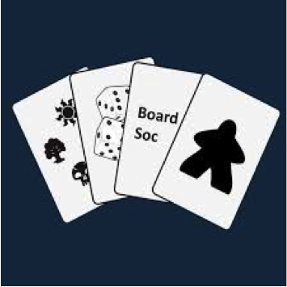

Sheffield Board Games Club
Meet every tuesday in the upstairs of the University Arms from 6-9pm
Also meet on the first Sunday of the month at the Red Deer from 12.30 onwards
Free, drop in sessions

University of Sheffield Board Gaming Society
Meet every Wednesday from 6pm-late in the Activity Zone (can sometimes vary - check website) and every Saturday from 2-6pm in View Deli, both in the University of Sheffield Student’s Union
Yearly membership, drop in sessions
Sheffield Hallam Student’s Union TableTop Gaming
Meet every friday from 6-9pm in Howard’s building
They also run weekly role-play wargames on mondays and wednesdays (see website)
Yearly membership, drop in sessions
Social Gaming @ Treehouse Board Game Cafe
Meet the second Sunday of the month from 6-10pm
£5 for non-members or £2.50 for members, drop in session
Sheffield Board Games Library
Meet the third wednesday of the month at 5.30-8pm in the Reading Room of the Sheffield Central Library
Also have one-off family board game day events
Free but need to register for event on eventbrite
Board Games Night @ Patriot Games Store
Meet every friday from 6pm-late
They also run several other weekly events such as role-playing, Dungeons and Dragons, miniatures, card games etc (see website)
Free, drop in sessions but can reserve place by filling in facebook poll